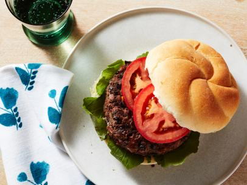

Black Bean Burgers

Description
Yields: 3 servings
Prep time: 60-90 minutes
Cook time: 8-10 minutes
The prep work for this can take awhile, but if you've got an hour to spare one night it pays off with the other two fresh meals. Put on some music and get chopping!
Ingredients
- 1 large egg
- 2 tablespoons olive oil
- 1/2 teaspoon ground cumin
- 1/4 teaspoon salt
- 1/4 teaspoon cayenne pepper
- 1 15oz can black beans, rinsed
- 1 cup panko bread crumbs
- 1/2 red bell pepper, chopped fine
- 2 tablespoons minced fresh cilantro
- 1 small shallot, minced
- 6 hamburger buns
- tomato or other desired condiments
Steps
- Whisk egg, 1 tablespoon oil, cumin, salt, and cayenne together in small bowl.
- In separate bowl, mash 1-1/4 cups beans with potato masher until mostly smooth.
- Gently stir in egg mixture, remaining beans, panko, bell pepper, cilantro, and shallot until just combined.
- Divide bean mixture into six lightly packed balls and gently flatten each ball into a 1-inch-thick patty.
- Heat remaining 1 tablespoon oil in 10-inch nonstick skillet over medium heat until shimmering.
- Gently place patties in skillet and cook until well browned on first side, 4 to 5 minutes.
- Gently flip patties and continue to cook until well browned on second side, 4 to 5 minutes.
- Serve hot on buns (recommended two per person) with desired condiments.
Return to home